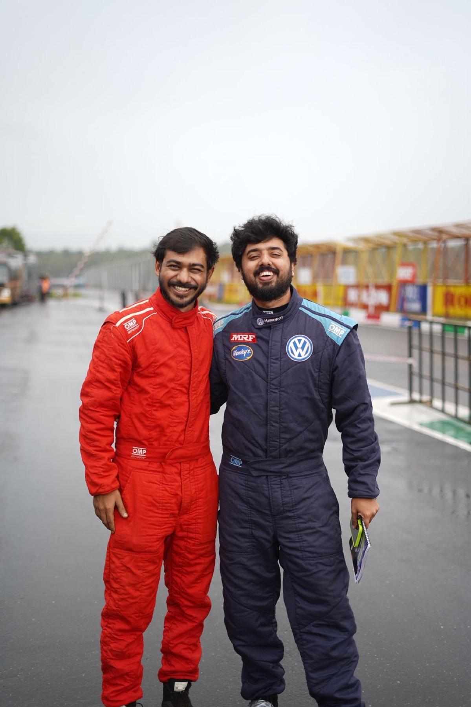

Six race weekends. Thirty million eyes per event. One car from Calicut on a national podium in year one — and a story Indian motorsport is already telling. Make your brand part of it.
National media is telling this story. Sponsors don't have to manufacture a narrative — they ride one journalists already want to write.
The 27-year-old IIT Bombay graduate finished as runner-up in the Junior Indian National Rally Championship in his debut season — missing only the opening round and surviving a mechanical failure in the season finale.
"To achieve something like this in my first season is remarkable," Abhimanyu said. "I want to continue this run." His next target: the full INRC 2026–27 championship and a podium every race weekend.
After the first jump in my car, I knew this was my place.
Same city. Same obsession. The first rally crew from Calicut on the national podium — and the story Indian motorsport is starting to write.

Abhimanyu Sajeevan drives — IIT Bombay Mechanical Engineering '17, finance professional in Bengaluru, trained by multiple-time INRC champion Fabid Ahmer of Vision 4 Motorsport Solutions.
Vijay Anand calls the notes from the right seat — coached in co-driving by Raghuram S, also of Vision 4 Motorsport Solutions. The voice between Abhimanyu and every blind corner in India.
In one season they went from unknowns to JINRC runners-up. Now they're stepping up to the full INRC 2026–27.
Spin the season on the interactive map. Read the round-by-round 2025–26 results. See your brand in the gallery. Three places to start.
An interactive globe showing the six 2026–27 race weekends across India — Nashik, Indore, Chennai, Coimbatore, Coorg, Bengaluru K1000.
Open the mapThe full debut season — Coimbatore podium, Coorg P3, Bengaluru leg win, Indore double, Nashik recovery. Five of six rounds, runner-up sealed.
See the resultsStage clips, action photography, and the raw footage from the inside of 30M+ social views per event. Everything sponsors can co-brand.
Open the gallery30M+ social views per event, up close. Hover or tap any reel to play.